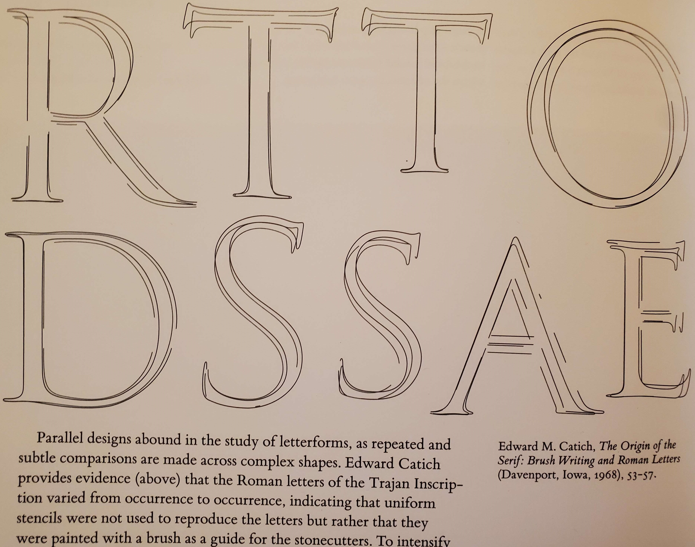
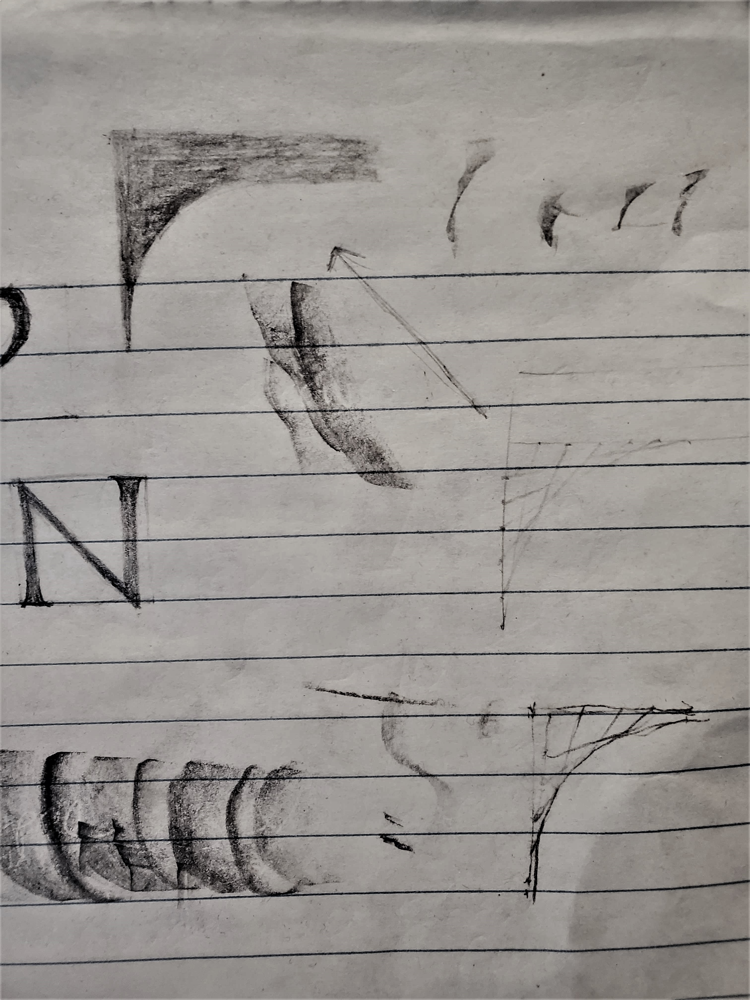

Ever wonder where the latin fonts come from? If you're like me the answer is no. Which is too bad; it's a surprisingly answerable question.
Even more answerable though, is where did the design of capital letters come from? The answer is so simple, it's trivia.
The answer: The inscription on
Trajan's column.

I've been studying my grandfather's technical drafting book "Engineering Drawing" by Thomas French. Where, between French's illustrations of traditional lettering, French explained - "all our fonts are based on 'Old Roman' ".
Because the Italians decided the Roman's had the most beautiful Capitals. Combined it with Carolingian minuscules (believing the minuscules to be from antiquity), just in time for the arrival of the printing press.
But this article isn't about that history, it's about a technique. A technique which, quietly, makes our lives a little bit better every day.
How do I make serifs and their fillets?
My grandfather's old textbook, after explaining block lettering carefully. left a terse discussion of serifs and their fillets:

We have something old and something new. The proportions from the block letters were kept. But there were at least two new major features, The directions of the stems were to have different thicknesses, and little plank things were added on all the horizontal and vertical lines.
These planks are called serifs, They're sometimes called slab serifs if you don't dress them up with their fillets. A popular font with slab serifs is Courier:

But this isn't courier. Traditional serifs need fillets. To add the fillet, a curve was to be drawn from the end of the serif to the body of the stem. After drawing the letter in outline, it was to be filled in, either in pencil or ink.
Which is all well and good. But there's a catch. In French's words "Roman letters are spoiled oftener by poor serifs and fillets than in any other way".
The image shows a "right" curve. How can a curve be "right"? On first reading I was stuck.
What follows are my various guesses as I stumbled to learn how to make serifs and their fillets. To my eyes, each of these techniques is beautiful and useful in their own way; the journey is more important than the curve.
Guess one: Euclidean ideal Serifs
Often it helps to solve a problem by pretending you're a historian.
How did
I started on this journey because I'm curious about traditional drafting. The tech art of yesterday.
You can only look at so many compass and straight edge constructions before you have the idea that a fillet is just a corner of a circle. And the Roman's loved the Greeks, and the Greeks loved circles! Maybe that's how they did it!
The serifs and the stem are enough data to specify a circle. You think of the stem and serif as tangent lines to the circle. Measure the length of the serif along the stem to find where the circle ends on the stem. Then carry out perpendiculars from the serif and stem to find the center of the circle.

From now on,
I'm going to refer to the two ends of the serif, and the point of contact with
the stem, as
Guess two: hand painted Serifs
Geometrically constructed fonts were popular for centuries. Perhaps
The most notable examples are those by the famous artist
Albrecht Dürer. It's often said that this was the approach
used by the Romans for the Trajan Column's Inscription. For example, at the time of writing
February 9 2023, on wikipedia
the author claims "The inscriptional capitals on Roman buildings and monuments
were structured on a
Perhaps the most compelling counterargument to this was given in the late 1960s by Edward M. Catich in his book "The Origin of the Serif." Where he defends that they were painted by hand in a more intuitive manner.
The style of argument Catich used is nicely exemplified in "Visual Explanations" by Tufte
Catich gives many arguments of this sort, including inferring the brush techniques used by observing the sorts of common mistakes and patterns one makes with brushes.
Fortunately to learn this, we don't have to only look back. We have contemporary examples of professionals that can paint Roman capitals with a broad side brush.
Notice how the artist makes the fillets much larger than the serifs by rotating his brush as he transitions. You can still get a feel for how fillets transition into serifs even without the ability to rotate a brush. Try painting the letter 'I' below in the paint program below it.
After trying quite a few times at this, hopefully it's intuitive that with practice, painting without constructions is more practical.
Guess three: rotating the brush
Before I fully understood Catich's argument, I had a couple guesses over how exactly painting with the brush might work. In the guess two section, I wanted to make it clear that rotating the brush isn't essential to get a characteristic fillet shape.
Because, after watching the pro work, I glibly thought rotating the brush was required. I confused myself even more horribly though! My guess for how to rotate this brush was even backwards from the pro!
The following slider animation illustrates what I thought the surface of the brush was supposed to look like. I was very proud of myself, because the shape is pretty darn beautiful!
Here is one of my attempts to do this with a pencil sharpened to have a long tip of exposed graphite. I moved my pencil over the paper in the same manner as the above animation.

Those jumps in the lines of the animation aren't artificial, As one line gets close to vertical (or horizontal) its end speeds up rapidly.
Guess four: Highschool doodles, or bezier Serifs
This guess is the reason why I decided to write up this article. Because I had discovered that by slightly modifying the previous brush rotating technique, then we get a quadratic bezier curves.
Instead of having a fixed width brush, and rotating it along the control points of the serif. Let the width of the brush line change, and allow the ends to linearly interpolate between their respective extremes.
In high school, I would occasionally see students, bored with their lecture, doodle the following image in their note books.

Comparing these lines with the previous animation gave me a flash, of insight. I initially thought these were literally the same, they aren't; but they're analogous! Rather than keep the length of the brush constant, the sum of fractions of progress from the corner is constant instead.
What is true of both of them, is that you can imagine the "brush lines" moving through space, and this was enough for make me see that I was looking at the spine of De Casteljau's algorithm.
Freya has a wonderful discussion of Bezier curves broadly, with a particularly nice animation of De Casteljau's algorithm on Quadratic Bezier curves. The animation is at time 2:40:
In the classic construction of De Casteljau's algorithm, you construct the curve by plotting the midpoint of the "brush line". But I had an idea - if I wanted to draw a bezier curve with the broad side of a long sharped pencil. I could fake shortening the pencil by overshooting the stem control points. The excess would be filled in by the stem anyway.

The fillet that this would draw, would be the fillet you'd obtain from the highschool doodle, if you drew so many lines you couldn't see the individual lines anymore. The following image shows this in pencil:
Is the curve of that serif really the same as the quadratic bezier curve given by De Casteljau's algorithm?
The answer is yes, for a beautifully simple reason. The "brush line" of De Casteljau's algorithm is the derivative of the bezier curve. And because the graph of quadratics are convex, any tangent line (or derivative line) must lie entirely one one side.
The tangent lines will never invade the region on the other side of the bezier curve, and each one contains a point of the bezier curve, by definition of its construction.
If you are familiar with calculus. I invite you to prove that the line between lines of De Casteljau's algorithm is indeed the derivative at the point it's constructing. It's a satisfyingly simple argument.
Below is what this fillet would look like. This is perhaps the easiest fillet to construct on a computer.
When I first realized this, I was so struck by its beauty. I assumed this
Final thoughts
None of the more technical constructions really match exactly how the Romans made their Serifs. However, in them I see a clear statement and identity. They embody the beauty of simple patterns.
Even though mathematics is beautiful, it isn't the only beauty, there is clearly room in these letters to express something more individual and subjective, you see calligraphers do this all the time.
In either case, we have technology to support our choice - we have no limits here. I am happy to call any of the above techniques correct. I hope you enjoyed this journey as much as I did.